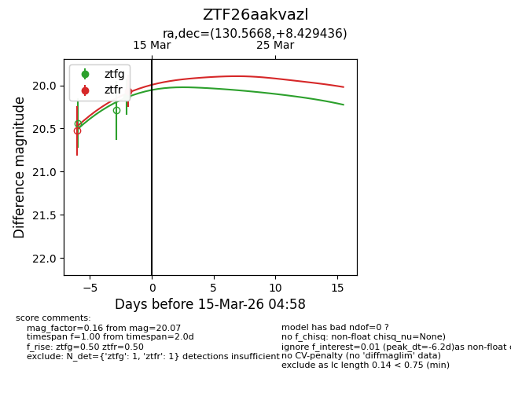
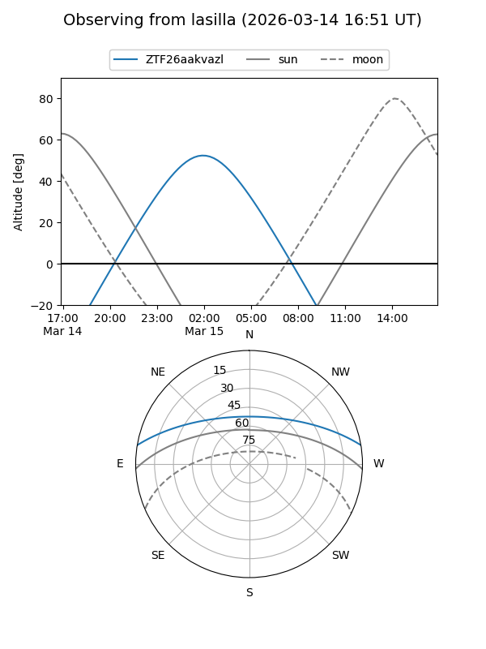
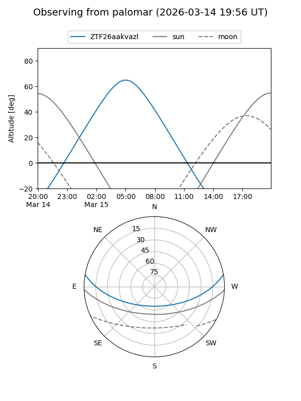
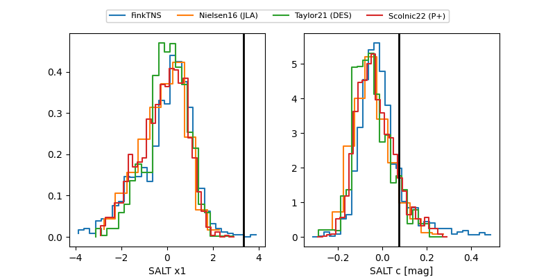

ZTF26aakvazl
Target ZTF26aakvazl at 2026-03-15 05:00
Aliases and brokers:
FINK: link
Lasair: link
ALeRCE: link
alt names
ZTF26aakvazl (ztf,fink_ztf)
Coordinates:
equatorial (ra, dec) = 130.5668,+8.42944
equatorial (HMS+DMS) = 08:42:16.04,+08:25:45.97
galactic (l, b) = (218.1031,+28.43608)
Flags:
Photometry:
last ztfg=20.13, ztfr=20.07
1 ztfg, 1 ztfr detections
Lightcurve

Visibility


Additional plots
